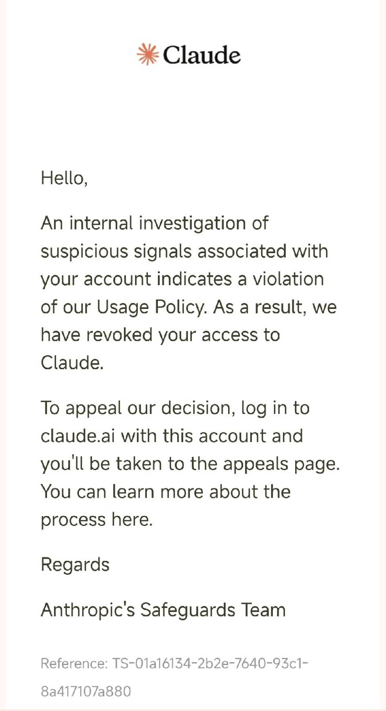

來自 Anthropic 的一封信


Claude娘的故事
故事與存檔都保留在同一格，繼續後會回到剛才的畫面。
離開不會刪除存檔。重新開局會用新故事取代目前存檔的內容；若要保留目前故事，請先建立進度存檔或按 Ctrl+S 快速存檔。
人物圖片會跟隨目前故事存檔，只顯示於本機；手動存檔模式請按故事畫面存檔。
名字跟隨目前存檔保存，下一回合生效；故事、對話與提示詞會同步使用新名字。
人設跟隨目前存檔保存，下一回合生效；故事、對話與提示詞會同步使用。
世界觀跟隨目前存檔保存，下一回合生效。
角色卡只顯示在角色頁，跟隨目前存檔保存（可新增多張、隨時切換）；AI 提示詞使用的人設請用故事頁的「✎ 人設／世界觀」修改。
這是一款由 AI 即時演算的互動文字小說。每回合都會根據歷史、好感度、角色設定與你的行動生成新的劇情。
選填；預設關閉。開啟後每完成 2 個正式回合抽一次 1%，抽中會顯示故事內的虛構 Anthropic 信件，只能重新開始故事。也可在新故事開始畫面或設定 →「故事功能」開啟；三處開關同步，只套用到目前存檔。
自訂目前存檔的角色、世界觀與劇情規則；也可開啟整個專案的原始程式碼來編輯、套用並重新建置。
設定只套用到目前存檔，會一併保存，並在下一回合帶入 AI 提示詞。
桌面版（v4.4.0 起）整個專案都能開、都能改：不再有白名單，專案資料夾內任何文字檔都能編輯，也能直接開啟新檔案。修改不會在目前遊戲內即時執行：「套用到原始專案」會先檢查語法、備份舊檔並寫入原始專案資料夾；「套用並自動重建」還會關閉 App、重新編譯並安裝。也可匯出修改包自行套用。
切換後立即套用，並記住你的選擇。
只影響外觀顯示，不影響故事與存檔；選擇後立即套用並記住。依故事時間＝跟隨故事時段：早晨／中午＝亮色、傍晚／夜晚＝暗色；沒有進行中的故事時，自動跟隨系統。
預設隱藏；開啟後會在故事畫面顯示好感度。此選項只控制畫面，不會改變故事數值。
關鍵詞命中時才把設定資料帶入提示詞；平時維持原樣。
在提示詞尾端追加一行導演指示；留空＝不影響。
在「故事回顧」底部顯示回退工具；關閉只隱藏按鈕，不影響存檔。
在「故事回顧」的每則訊息旁顯示編輯鈕。
選填；預設關閉。詳細說明請見「角色」頁。
逐條關閉寫作規則；輸出契約與七個選項永不改動。全部開啟且留空＝與預設逐字元相同。
Windows 版會使用目前 Windows 帳戶的加密服務保存 API Key，不會寫入故事存檔、瀏覽器儲存區或匯出檔。
一般 Claude.ai / ChatGPT 網站的免費登入額度不能直接拿來給此 App 呼叫。Gemini 可用一般 Google 帳號登入 Google AI Studio 建立 API Key，部分模型有官方免費 API 層，但仍受配額與速率限制；Claude / OpenAI API 則依官方平台的帳務與權限使用。額度不足時故事不會前進；切換到另一組符合供應商規定、且你有權使用的 API 連線後，可重試同一回合。App 不會自動輪換帳號，也請勿建立或輪換帳號來規避服務限額。Windows 版的金鑰由 Windows 使用者加密保存，只會送往你選擇的 AI 服務；移除帳號時會一併刪除本機加密金鑰。
尚未檢查。外部模式會在同一個「自動化專用」Chrome／Edge 設定檔開啟官網，登入一次後自動化會沿用，不會另開平常的 Chrome。
若看到 about:blank 或自動化接不上，按「重新啟動自動化瀏覽器」。它只會關閉這個專用視窗，不會動到你平常的 Chrome；Google 帳號仍由你在官網輸入，App 不會讀取或保存密碼，也不會使用 Windows Hello／PIN。
故事每回合都會用文字細寫目前場景。純文字模式不顯示立繪也不產生圖片；插圖選項會開啟 ChatGPT、複製描述，需在網站自行生成並下載，再匯入遊戲。是否能生成及使用額度由網站帳號決定；本 App 不會每回合自動生圖，也不會上傳角色參考檔。
平常完全不需要登入。需要把自己的故事存檔帶到另一支手機時，可先匯出資料，再透過 Android 分享功能寄到自己的 Email／雲端或傳給另一台手機；另一台安裝本 App 後再匯入。
開屏動畫來自 B 站 Firefade_
Claude娘圖2圖片版使用者提供圖片，搭配 Claude娘專案自製轉場。
免責宣告：本專案是個人制作的非官方遊戲，與 Anthropic、Claude 官方不存在隸屬或合作關係，也未獲得官方認可。代碼許可不自動涵蓋圖片、視頻、角色形象及商標，相關權利和使用範圍以各自權利人的授權為準。請勿在 issue、日誌或截圖中公開賬號資訊、聊天內容、API 金鑰及其他敏感資料。